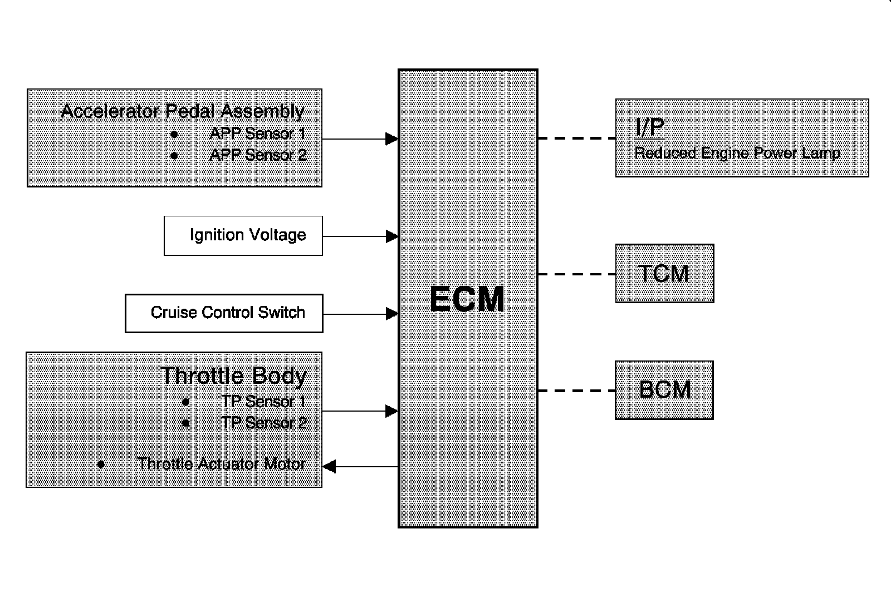

Electronic Throttle Actuator: Description and Operation
Throttle Actuator Control (TAC) System Description

The engine control module (ECM) is the control center for the throttle actuator control (TAC) system. The ECM determines the driver's intent based on input form the accelerator pedal position sensors, then calculates the appropriate throttle response based on the throttle position sensors. The ECM achieves throttle positioning by providing a pulse width modulated voltage to the throttle actuator motor. The throttle blade is spring loaded in both directions, and the default position is slightly open.
Modes Of Operation
Normal Mode
During the operation of the TAC system, several modes, or functions, are considered normal. The following modes may be entered during normal operations:
* Minimum pedal value-At key-up, the ECM updates the learned minimum pedal value.
* Minimum throttle position values-At key-up, the ECM updates the learned minimum throttle position value. In order to learn the minimum throttle position value, the throttle blade is moved to the Closed position.
* Ice break mode-If the throttle blade is not able to reach a predetermined minimum throttle position, the ice break mode is entered. During the ice break mode, the ECM commands the maximum pulse width several times to the throttle actuator motor in the closing direction.
* Minimum pedal value-At key-up, the ECM updates the learned minimum pedal value.
* Battery saver mode-After a predetermined time without engine RPM, the ECM commands the battery saver mode. During the battery saver mode, the TAC module removes the voltage from the motor control circuits, which removes the current draw used to maintain the idle position and allows the throttle to return to the spring loaded default position.
Reduced Engine Power Mode
When the ECM detects a condition with the TAC system, the ECM may enter a reduced engine power mode. Reduced engine power may cause one or more of the following conditions:
* Acceleration limiting-The ECM will continue to use the accelerator pedal for throttle control, however, the vehicle acceleration is limited.
* Limited throttle mode-The ECM will continue to use the accelerator pedal for throttle control, however, the maximum throttle opening is limited.
* Throttle default mode-The ECM will turn OFF the throttle actuator motor, and the throttle will return to the spring loaded default position.
* Forced idle mode-The ECM will perform the following actions:
- Limit engine speed to idle positioning the throttle position, or by controlling the fuel and spark if the throttle is turned OFF.
- Ignore the accelerator pedal input.
* Engine shutdown mode-The ECM will disable fuel and de-energize the throttle actuator.